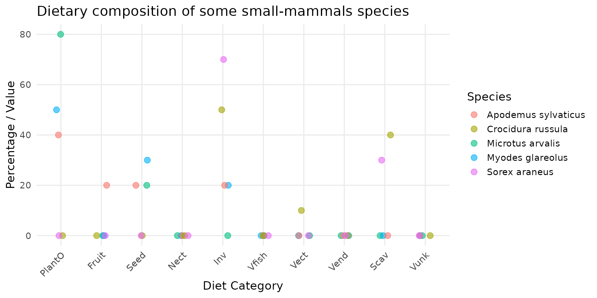
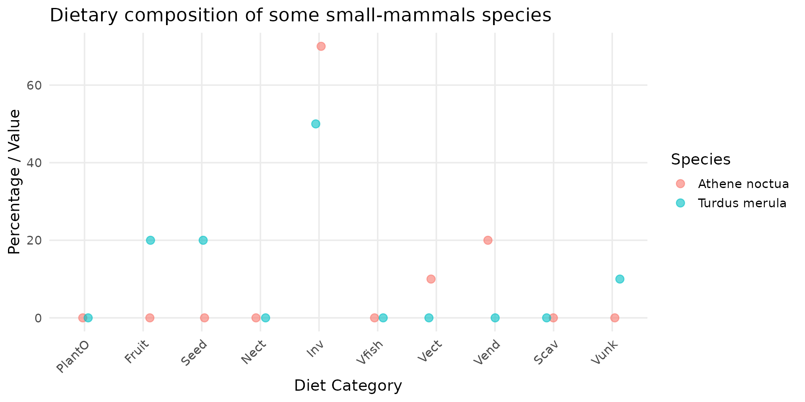
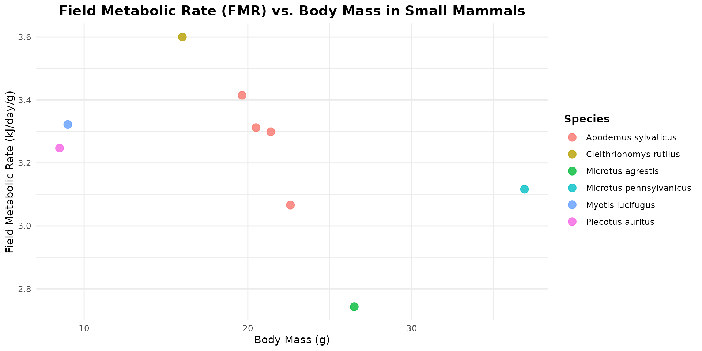

Berisp-like: a trophic model of contamination
zoo_Berisp_full.Rmd
library(spacemodR)
library(rstan)
library(ggplot2)
library(scales)
library(dplyr)
library(tidyr)
library(terra)Define a Spacemodel
Habitat
ground_cd <- load_raster_extdata("ground_concentration_cd_compressed.tif")
names_hab = c("soil", "plant", "earthworm", "carabid", "mamHerb", "mamInsect")
list_habitat <- lapply(names_hab, function(i) ground_cd)
stack_habitat <- raster_stack(list_habitat, names_hab)Trophic web
trophic_df <- trophic() |>
add_link("soil", "plant", 1) |>
add_link("soil", "earthworm", 1) |>
add_link("soil", "carabid", 1) |>
# mamHerb
add_link("soil", "mamHerb", 2/100) |>
add_link("plant", "mamHerb", 90/100) |>
add_link("earthworm", "mamHerb", 4/100) |>
add_link("carabid", "mamHerb", 4/100) |>
# mamInsect
add_link("soil", "mamInsect", 2/100) |>
add_link("earthworm", "mamInsect", 49/100) |>
add_link("carabid", "mamInsect", 49/100)
plot(trophic_df)
create the spacemodel
spcmdl_trophic_fixed <- spacemodel(stack_habitat, trophic_df)Contaminantion by Cadmium
Vegetation
For Cadmium, the equation is given in Berisp:
In Eco-SSL, authors use the following equation (Neperian logarithm):
Transfer of food and contaminant
where:
- : average individual/item biomass of resource ,
- : average individual/item biomass of consumer ,
- : concentration of substance in resource (e.g. ),
- : concentration of substance in resource (e.g. ),
- : assimilation efficiency of food ,
- : excretion rate of food,
- : average age of the consumer ,
Diet and Body Mass
The diet and body mass of 5401 mammals and 9994 birds are in the attached datasets.
Apodemus diet
In this dataset DBFunc_MamFuncDat, we can look at the
estimated diet of all voles species as well as their mean body mass.
diet_apodemus = DBFunc_MamFuncDat[
grepl("Apodemus", DBFunc_MamFuncDat$Scientific),
]
# transform data_set
diet_long <- diet_apodemus |>
pivot_longer(
cols = c(Diet.Inv, Diet.Vend, Diet.Vect, Diet.Vfish, Diet.Vunk,
Diet.Scav, Diet.Fruit, Diet.Nect, Diet.Seed, Diet.PlantO),
names_to = "Diet_Category",
values_to = "Value"
) |>
mutate(
Diet_Category = stringr::str_remove(Diet_Category, "Diet\\."),
Diet_Category = factor(Diet_Category, levels = trophic_order)
)
# create plot
ggplot(diet_long, aes(x = Diet_Category, y = Value, color = Scientific)) +
geom_point(size = 3, alpha = 0.6, position = position_jitter(width = 0.15, height = 0)) +
theme_minimal(base_size = 14) +
labs(
title = "Dietary Composition of Apodemus Species",
x = "Diet Category",
y = "Percentage / Value",
color = "Species"
) +
theme(
axis.text.x = element_text(angle = 45, hjust = 1),
panel.grid.minor = element_blank(),
)
Concise Diet Descriptions (EltonTraits 1.0)
-
Diet.Inv: % of invertebrates (insects, larves, worms, mollusks). -
Diet.Vend: % of endothermic vertebrates (birds and mammals). -
Diet.Vect: % of ectothermic vertebrates (reptiles and amphibians). -
Diet.Vfish: % of fish consumed. -
Diet.Vunk: % of unknown or unclassified vertebrates. -
Diet.Scav: % of scavenging activity (eating carrion/dead animals). -
Diet.Fruit: % of fruits and berries consumed. -
Diet.Nect: % of nectar, pollen, or plant exudates. -
Diet.Seed: % of seeds, nuts, grains, or cones. -
Diet.PlantO: % of other vegetative tissues (leaves, stems, roots, bark).
And also:
-
Diet.Source: Reference/ID of the scientific data source. -
Diet.Certainty: Data certainty score (direct species study vs. genus-level extrapolation).
Small mammals: voles and shrew
diet_mammal <- DBFunc_MamFuncDat |>
dplyr::filter(
Scientific %in%
c("Microtus arvalis", "Myodes glareolus", "Apodemus sylvaticus", "Sorex araneus", "Crocidura russula")
)
# transform data_set
diet_long <- diet_mammal |>
pivot_longer(
cols = c(Diet.Inv, Diet.Vend, Diet.Vect, Diet.Vfish, Diet.Vunk,
Diet.Scav, Diet.Fruit, Diet.Nect, Diet.Seed, Diet.PlantO),
names_to = "Diet_Category",
values_to = "Value"
) |>
mutate(
Diet_Category = stringr::str_remove(Diet_Category, "Diet\\."),
Diet_Category = factor(Diet_Category, levels = trophic_order)
)
# create plot
ggplot(diet_long, aes(x = Diet_Category, y = Value, color = Scientific)) +
geom_point(size = 3, alpha = 0.6, position = position_jitter(width = 0.15, height = 0)) +
theme_minimal(base_size = 14) +
labs(
title = "Dietary composition of some small-mammals species",
x = "Diet Category",
y = "Percentage / Value",
color = "Species"
) +
theme(
axis.text.x = element_text(angle = 45, hjust = 1),
panel.grid.minor = element_blank(),
)
We can compared the results with what is used in the Berisp documentation:
| grass | herbs | berries | seeds | earthworm | beetle | soil | |
|---|---|---|---|---|---|---|---|
| bank vole (Myodes glareolus) | 20 | 20 | 26 | 24 | 4 | 4 | 2 |
| common vole (Microtus arvalis) | 42 | 41 | 15 | 2 | |||
| wood mouse (Apodemus sylvaticus) | 6 | 6 | 12 | 58 | 8 | 8 | 2 |
| shrew (Sorex araneus or Crocidura russula) | 49 | 49 | 2 |
Birds: little owl and black bird
diet_bird <- DBFunc_BirdFuncDat |>
dplyr::filter(
Scientific %in%
c("Athene noctua", "Turdus merula")
)
# transform data_set
diet_long <- diet_bird |>
pivot_longer(
cols = c(Diet.Inv, Diet.Vend, Diet.Vect, Diet.Vfish, Diet.Vunk,
Diet.Scav, Diet.Fruit, Diet.Nect, Diet.Seed, Diet.PlantO),
names_to = "Diet_Category",
values_to = "Value"
) |>
mutate(
Diet_Category = stringr::str_remove(Diet_Category, "Diet\\."),
Diet_Category = factor(Diet_Category, levels = trophic_order)
)
# create plot
ggplot(diet_long, aes(x = Diet_Category, y = Value, color = Scientific)) +
geom_point(size = 3, alpha = 0.6, position = position_jitter(width = 0.15, height = 0)) +
theme_minimal(base_size = 14) +
labs(
title = "Dietary composition of some small-mammals species",
x = "Diet Category",
y = "Percentage / Value",
color = "Species"
) +
theme(
axis.text.x = element_text(angle = 45, hjust = 1),
panel.grid.minor = element_blank(),
)
Energy Needs
We have the energy needs of 749 species, 97 mammals, 107 birds, 170 fishes, 51 reptiles, 11 amphibians, 110 crustacean, 65 arthropods, 75 protozoa
data("FmrBT")close species
The list is missing some species.
Sorex and Crocidura (Shrews): the list lacks true shrews (Soricidae). When seeking a metabolic surrogate for temperate shrews (Sorex spp.) within this dataset, small temperate insectivorous bats, such as Myotis lucifugus and Plecotus auritus, serve as excellent physiological equivalents. Like true shrews, these bats are lightweight (often weighing between 5 and 12 grams) and operate under immense thermal pressure from temperate and boreal climates. Because they are strictly insectivorous, they share a highly active foraging strategy that demands a continuous supply of high-protein, easily digestible prey. Most importantly, the extreme energetic cost of flapping flight combined with their tiny body size forces these bats to run a hyper-metabolic “engine.”
Myodes glareolus (Bank Vole): the list is highly enriched with rodents that are phylogenetically very close to the bank vole. Most notably, Cleithrionomys rutilus belongs to the exact same genus (as Myodes and Cleithrionomys are synonymous in modern taxonomy). Additionally, species from the genera Microtus (like M. agrestis and M. pennsylvanicus) and Arvicola belong to the same family, Cricetidae, sharing identical microtine (vole-like) metabolic and toxicokinetic traits.
energy_mammal <- FmrBT |>
filter(
SpeciesVerbatim %in% c(
"Apodemus sylvaticus", "Plecotus auritus", "Myotis lucifugus",
"Cleithrionomys rutilus",
"Microtus agrestis", "Microtus pennsylvanicus")
)
# plot
ggplot(data = energy_mammal, aes(x = Mass_g, y = FMR_kJ_d/Mass_g, color = SpeciesVerbatim)) +
geom_point(size = 3.5, alpha = 0.8) +
labs(
title = "Field Metabolic Rate (FMR) vs. Body Mass in Small Mammals",
x = "Body Mass (g)",
y = "Field Metabolic Rate (kJ/day/g)",
color = "Species"
) +
theme_minimal() +
theme(
plot.title = element_text(face = "bold", size = 14, hjust = 0.5),
legend.title = element_text(face = "bold"),
legend.position = "right"
)
- Athene noctua (Little Owl): true owls (Strigiformes) are completely absent from this dataset. The closest relative available is Phalaenoptilus nuttallii (the common poorwill), which belongs to the Caprimulgiformes (nightjars). While it is a distinct family, nightjars share a nocturnal, insectivorous niche with small owls and belong to the same broader evolutionary landbird/Strisores lineage, making it the best available surrogate for nocturnal avian traits.
energy_mammal <- FmrBT |>
filter(SpeciesVerbatim %in% c(
"Turdus merula", "Phalaenoptilus nuttallii")
)
# plot
ggplot(data = energy_mammal, aes(x = Mass_g, y = FMR_kJ_d/Mass_g, color = SpeciesVerbatim)) +
geom_point(size = 3.5, alpha = 0.8) +
labs(
title = "Field Metabolic Rate (FMR) vs. Body Mass in Small Mammals",
x = "Body Mass (g)",
y = "Field Metabolic Rate (kJ/day/g)",
color = "Species"
) +
theme_minimal() +
theme(
plot.title = element_text(face = "bold", size = 14, hjust = 0.5),
legend.title = element_text(face = "bold"),
legend.position = "right"
)
Uptake and Excretion rate
- Uptake: The uptake rate constant of metals from food (kx,n,in) depends on the food ingestion rate constant (kn ) and the metal assimilation efficiency from the food matrix (px,a ) (Eqn. 3). The assimilation efficiency of cadmium in small mammals generally is low and depends on external conditions, such as pH in the gastrointestinal tract, available biological ligands in food, and stability of these metal complexes in the food matrix [21]. At present, the mechanisms of metal uptake via ingestion are not fully understood [20,22]; therefore, metal assimilation efficiency cannot be modeled mechanistically. Instead, an empirical cadmium assimilation efficiency (px,a ) of 0.51% (Supplemental Data; http://dx.doi.org/10.1897/2006-518.S1) was used to predict the uptake rate constant of cadmium from food (kx,n,in) (Eqn. 3). This empirical cadmium assimilation efficiency is a geometric mean value of data from 10 long-term experimental studies, including various experimental designs. kx,n,in n k ·px,a (3) where kn food ingestion rate constant [kg food/kg body wet wt/d] px,a assimilation efficiency of cadmium from food (empirical value, see Supplemental Data; http://dx. doi.org/10.1897/2006-518.S1) (0.51) [%]
# k_up_vole
# k_ex_voleTransfer equation
# /!\ Faudrait changer le code pour pouvoir faire un truc de ce tyle :
direct_intakes <- intake(spcmdl_trophic_fixed) |>
add_intake("soil", "plant", ~ inter_veg + slope_veg*x) |>
add_intake("soil", "earthworm", ~ inter_veg + slope_veg*x) |>
add_intake("soil", "carabid", ~ inter_veg + slope_veg*x) |>
default = NA, # for all other default is NA = no transfer or 1 full transfer ?
)
# ATTENTION DANS LES FONCTION, ON AIME TRAVAILLER EN LOG !!!
direct_intakes <- intake(spcmdl_trophic_fixed,
"soil -> plant" = ~ inter_veg + slope_veg*x,
"soil -> earthworm" = ~ inter_worm + slope_worm*x,
"soil -> carabid" = ~ inter_carab + slope_carab*x,
# mamHerb
"soil -> mamHerb" = ~ b_soil_mamHerb / b_mamHerb * /0.36,
"plant -> mamHerb" = ~ 10^x/0.77,
"earthworm -> mamHerb"= ~ 10^x/0.77,
"carabid -> mamHerb" = ~ 10^x/0.77,
# mamInsect
"soil -> mamInsect" = ~ 10^x/0.77,
"plant -> mamInsect" = ~ 10^x/0.77,
"earthworm -> mamInsect"= ~ 10^x/0.77,
"carabid -> mamInsect" = ~ 10^x/0.77,
default = 1, # for all other default is 1
normalize = FALSE # TRUE would weight every link to sum at 1
)